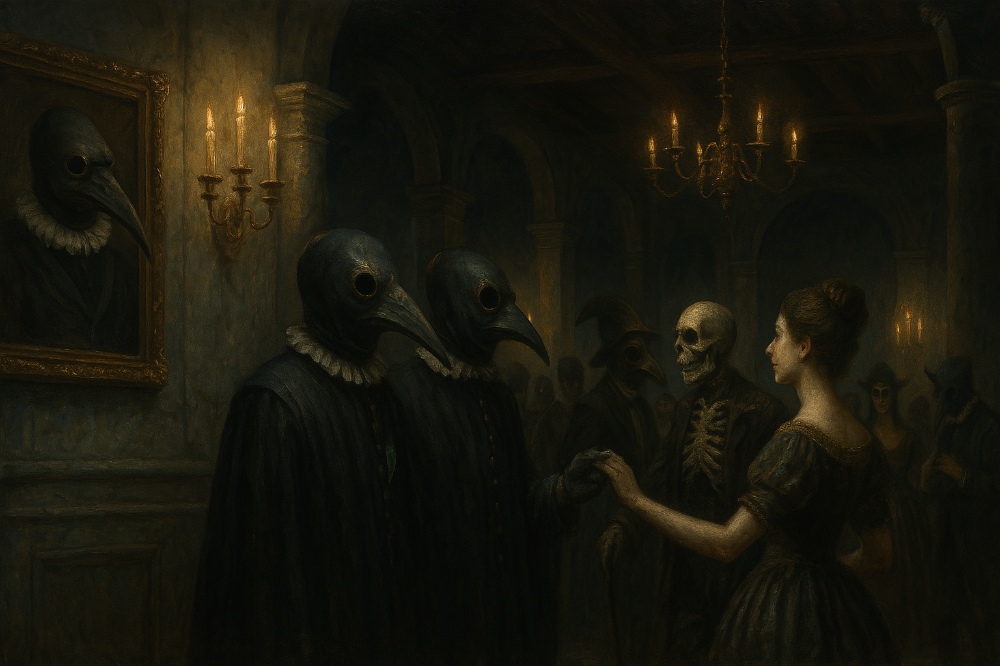

Chapter 1: Last Moment of Sanity
Requiem of the Feathered Estate


Requiem of the Feathered Estate
15051.09.14
在冒險者們收到了來自羽王的信後，他們便朝著羅特指認的方向前進。路上，靠著接簡單的任務，沒有多消耗費用。
四個多月後，一片廣袤的平原出現在他們面前，一座偌大的莊園遺世獨立地矗立在他們的視野正中央。冒險者們向前邁進，推開未上鎖的柵門。
莊園內，宅邸門口，兩排穿著正式又奇異的僕人並列著。他們臉上接戴著一致的短吻鳥類造型的面具，不論性別，身著西裝，左胸口上，則分別別著不同顏色與形狀的一根鳥羽。那是唯一能識別他們差異的地方了。羅特想起過去羽王派出與他交涉的傳話者，那位名為低語，毫無記憶點的人。他身上散發著一樣的氣味，很顯然的是羽王的人沒錯。
而宅邸的門雖然敞開，裡面卻漆黑一片。隨著冒險者們一一靠近，「羽僕」們紛紛開始向他們招呼，以各自不同的稱呼，向他們道「歡迎回家」，這讓冒險者們感到十分困惑：怎麼每個人都知道他們的名號？而且用了「回家」這麼奇異的字眼？
烏波見這些羽僕有趣，擅自化形成他們的模樣。他朝宅邸門口走近，聽見裡頭傳來響亮的腳步聲，在空蕩的宅邸，回聲更佳明亮。漆黑中的蠟燭逐漸變大，一名憂傷但不失禮節的貴族男子走了出來，向冒險者們微笑。他自我介紹為利希恩・阿莫雷，也就是信中提及的「羽王」，不過比起稱謂，他更偏好大家直接稱他為利希恩或阿莫雷。
利希恩帶著小心謹慎的冒險者們走入宅邸，隨著最後一人踏入房子，門也應聲關上了。長長的走廊上空無一人，只有左右對稱的好幾扇門，以及掛在牆壁上的肖像畫，用華麗的金框裝飾著。冒險者們端詳著肖像畫，看起來都有一些年代了，似乎是宅邸的主人們。他們也確認了利希恩並未出現在畫上。
「我人還在這呢，當然不會在畫上啦！」利希恩微笑道。看著烏波將其中一幅畫扯了下來，吞進他的肚子內，利希恩也沒有什麼情緒的波折，繼續緩緩地領著冒險者們向前走。
長廊底端有一扇門。利希恩推開門，走了進去。一張長桌的兩個長邊，分別擺了五張和一張椅子，桌上則放著乾淨的餐盤。利希恩示意冒險者們坐下，自己也坐在對面一側，靜靜看著。
冒險者們感到不知所措，除了烏波。他很快地就把盤子拎了起來，吞了下肚，但利希恩也沒有多加以評論。他再次鄭重地歡迎冒險者們來到他的「覆羽莊園」，並感謝大家完成了他的任務。冒險者們拿出答應的月神王冠，利希恩也依約，給了每個人50枚金幣作為回禮，接著他就請一名羽僕將王冠拿走了。
羽僕們端了香檳，遞給冒險者們飲用。利希恩緩緩地打量著冒險者們，也允諾回答任何他們提出的問題。冒險者們小心翼翼地確認上來的各道料理是否可能混有任何可疑的藥品，卻只發現利希恩選用的都是上等的食材，吃起來也都非常可口。
香檳之後，是第一道開胃菜—鵝肝醬，以及第二道開胃菜—煙燻鮭魚切片。冒險者們開始慢慢地放下心防。從利希恩的口中，他們得知他取得月神王冠，並不是想製造出更多月神的傳教士。相反的，利希恩對月神似乎有著極大的反感。
「芬尼爾曾經賜予我愛，但又擅自將它帶走。如今，我甚至不確定那份愛到底是否曾經存在過。」利希恩輕輕低下頭，呢喃道。
在開胃菜後是綜合蕈菇湯。儘管錯誤的菇類很有可能讓人身體產生不適，冒險者們卻也發現這碗湯沒有任何問題。
到了主菜，羽僕們一人端著一盤，每個人，都有不同的料理。一份高檔的牛排放在了庫登面前；賽柏的主菜則是一盤各式蔬菜；烏波拿到了一碗各類雜燴燉飯，看不太出來裡面到底包含哪些食材；GoR的盤子上放了章魚、花枝、魷魚等軟體動物；而羅特眼前的，則是一隻烤烏骨春雞。烏波看了一眼，放在利希恩面前的，竟然是幾塊切片麵包，與冒險者們的料理相比，差異挺大的。在快速吞食完自己的主菜後，烏波便將他的手伸向其他冒險者夥伴們的盤子，被利希恩輕聲警告「每個人的主菜都是特別挑選的，吃別人的主菜，這樣好嗎？」烏波不顧一切，卻發現比起自己的料理，其他人的菜，吃起來像是沒有味道一樣。他最後也將手伸向利希恩的盤子，利希恩也任他拿走一片自己的麵包。
當烏波嚷著應該要來杯紅酒時，羽僕們正好推開餐廳的門，紅酒這就端上了大家的面前。輕輕一聞，這酒十分香甜。
酒後，甜點是剛烤好的蘋果派，撒上肉桂粉，香氣撲鼻。配上最後的飲料，一頓精心準備的晚宴就此結束。
利希恩站起身，向冒險者們輕輕鞠躬，表示自己先行離開，他們可以在宅邸各處參觀。若有需要，利希恩以及羽僕們隨時可以幫忙。利希恩也告訴冒險者們，他們可以在莊園內待到任何時間。但之後會有一場儀式，他會邀請冒險者們一起來見證：這便是他取得月神王冠的使用之處。最後，他也善意地提醒冒險者們，莊園內的時間流動方式，和外界不太一樣，希望他們不會被嚇著。
在利希恩離開餐廳後，冒險者們先繞了一下餐廳內部，想看看有沒有什麼可疑之處。除了沒有任何窗戶外，這裡就是個高級的餐廳罷了。另外，剛才用餐的坐法，和普遍貴族宴客的坐法有所差異：一般來說，主人會坐在長桌的前端，賓客們坐在兩側或尾端。這場晚宴，座位彷彿更像談判一樣。
冒險者們向餐廳出口走去。然而，與方才的寂靜不同，走廊上傳來了喧嘩、笑鬧聲，甚至還有酒杯碰撞的聲音。冒險者們推開門，差一點就撞上了長廊上的客人。眼看出去，至少有十來個客人，而這還甚至不包含穿梭其中的羽僕。
庫登大感震驚，找了其中兩名看起來微醺但未醉去的客人，試圖和他們詢問，卻只得知客人們「都已經來很久了」，而且都是利希恩邀請來的。他們甚至也不清楚來這裡的目的，只覺得受邀參加一場貴族的宴會，肯定是要赴約了。仔細一看，冒險者們也發現這兩人面色十分慘白，懷疑他們可能是吸血鬼，但卻沒有找到決定性的證據。除了他們之外，冒險者們也發現長廊上的賓客，並不是全都是人類，甚至還有如僵屍般的個體存在。
在兩名客人與冒險者們分開後，烏波發現原本被他啃食掉的畫像位置竟然被填補上了，而其他的畫像，也都很明顯的換成了不同的人。
庫登嘗試走到進入宅邸的那扇門，一推開，卻發現自己步入了剛才用餐的餐廳，餐桌上放滿了各式佳餚，滿滿的賓客們正拿著餐盤，邊享用餐點邊談天。對於這混亂的一切，冒險者們確定了一件事：這裡有很濃厚的魔法，但是是由各種不同魔法層層建構而成的。而當中，還混有非常微弱的芬尼爾的神性在裡頭。
再次離開餐廳，看見賓客們穿梭在不同房間與長廊之間，冒險者們決定踏入其中一個門口看看。
推開門，裡頭是一座舞廳。昏暗的燈光下，數不清的舞客交錯著。一名舞客向庫登伸出了手，邀請他共舞。奮力跳著舞，縱使對方舞步熟練，庫登仍發現對方腳步已經開始踉蹌了。
「你還好嗎？是不是跳很久了，要不要休息？」庫登問道。
「沒事的，我一直都在跳，但沒事的！」舞伴的身體很顯然地開始有些狀況，卻遲遲不放手。
看著庫登有了舞伴，羅特也嘗試尋找舞池外落單的人。他瞇起眼一看，遠處的牆邊，站了一個低著頭的人。羅特竄過舞池，朝著那人走去，伸出他的手，邀請他一起踏入舞池。
鳥人抬起頭，銳利的嘴喙懸在空中，深邃的雙眼看向驚詫的羅特。他輕輕吻了羅特的手背。而這讓羅特有種不知名的悸動與熟悉感。「你終於來了，羅特。」
「你、你的名字是？」羅特顫抖著說著。
「名字什麼的不重要。」鳥人牽起羅特的手，一同踏入舞池。
「你……是我很重要的人嗎？」
「重不重要，這要問你啊！」鳥人微微笑道。舞池中，羅特的眼神彷彿只有鳥人。但此刻的他，一時不知該說什麼好。
剎那間，在音樂交錯之下，羅特瞬間換了舞伴：庫登詫異的眼神出現在他面前。
「對不起！」羅特甩開庫登的雙手，拚了命的想從人群中找到消失的鳥人，卻彷彿他從未存在般。庫登則對於觀察到的異象被打斷，也不知所措。
發現找不到鳥人，羅特哭著走回方才找到鳥人的牆角，低下頭啜泣。
「沒事的，羅特。」一道女聲在他耳邊響起。那聲音極似一名曾與他一起冒險的女子，讓他哭得更慘了。「別哭。」
羅特擦了擦眼淚，朝著舞廳的門口離去。路上，有人搭了他的肩。
「回憶就是這樣。」利希恩在舞廳內看著他，微微說道。「隨時都會散去的。」語畢，利希恩便從容地向外走去。羅特追趕著，卻也追丟了，只見到堵在門口觀望的賽柏。看見羅特哭喪的臉，賽柏也就不多問了。
另一方面，烏波看見庫登和羅特都有了舞伴，便找到了幾名正在跳舞的舞客，把他們都拉了過來，像是圍成一個小圈一樣，繞著、繞著、旋轉著。舞客們開心地大笑，烏波也感到不亦樂乎，直到他瞥見遠方利希恩的身影，正朝著舞廳深處走去。烏波喚出他的烏鴉魔寵，要他往利希恩的方向追去，隨即，他便將舞伴紛紛甩出去，朝著利希恩的方向前行。
被甩出的舞伴們躺在地上哈哈大笑，看見烏波朝著一個方向不斷前進的庫登則趕上，跟在烏波身後。走了好一陣子，烏波停在舞池底端的牆前。他的魔寵烏鴉正停在這。很顯然的，他跟丟了利希恩。
在烏波的指示下，魔寵烏鴉飛越舞池，停在哭喪著臉的羅特的頭上，隨著羅特步出了舞廳。
羅特步出舞廳，走向正對面的門。推開，裡面是一座酒吧。羅特找了吧台最角落的位置坐了下來。酒保立刻調了一杯五顏六色的酒，遞給了羅特。
烏波和庫登走到了舞廳出口，看見賽柏正在門口等待。賽柏指出剛剛看見羅特走入正對面的門，大家卻也發現在離開餐廳後，他們就沒看見GoR了。
烏波、庫登和賽柏踏入了剛才羅特走進的門，裡頭是一座偌大的圖書館，十分安靜。利希恩坐在門口不遠處像是櫃檯一樣的座位，一手拿著書，另一隻手則在書上抄抄寫寫。
冒險者們向利希恩大聲質問，卻得到沒任何幫助的答案。賽柏在發現圖書館內的讀著們看的書都是全白的後，試圖翻出幾本書來看看，卻發現儘管書的封面都有文字，裡面卻全都是空白的。庫登決定繞繞看這個圖書館，卻發現走了超過20分鐘，才繞完整座圖書館。但在意識到剛才的舞廳有至少一座籃球場的大小後，這似乎也不是什麼令他感到訝異的事了。烏波，則將書櫃上的書抓起，啃碎，剩下的殘渣丟在地上。然而，當他視線沒有在那些殘渣上，一回頭，地面上卻又是乾淨的。
酒吧內，羅特喝著悶酒。他感到微醺，多喝了好幾杯相同的酒，卻不見任何醉意增長，只好向酒保要濃度更高的酒，純酒最好。微醺的羅特對著酒保喃喃自語，問他是否懂他的感受：見到了以為再也見不到的人，卻又再次失去了他。想起了，卻又再次遺忘；重拾了，卻又再次失去。酒保裝好了酒，轉過頭來，羅特卻只見到利希恩的臉。
有著利希恩臉的酒保坐了下來。羅特試圖和他分享發生在自己身上的事，利希恩卻回他說「你的事，我非常清楚」。利希恩反過來，告訴羅特「覆羽莊園」的羽毛，是天使的羽毛。那是他的天使，是芬尼爾賜予他的天使。
「要是我永遠留在這裡，我還有機會再見到他一面嗎？」羅特灌著酒，卻發現再怎麼喝，某部分的自己卻總是清醒，醉不了。「我好想……永遠留在這裡……。」轉過頭去為他裝酒的利希恩，卻已變回原本的酒保，就像羅特見到的鳥人一樣消失了。
離開圖書館，烏波和庫登決定推開不一樣的門。這次他們走入了一間劇場。舞台上是一名小丑，正在用浮誇的動作譁眾取寵。烏波在牆角試圖尋找小石子，想朝著小丑丟去；庫登則朝著舞台走去。
小丑朝著兩人揮揮手，眼看庫登快要走到舞台上，小丑大聲喊道，要請特別來賓上台。
小丑看著庫登，邀請他來場特別的演出。他向庫登分享了自己想到的劇本：他要庫登扮演一隻牛頭怪冒險者，再一次的冒險途中，桌補了一支由他扮演的哥布林，而為了讓哥布林乖乖聽話，牛頭怪藉由砍斷哥布林的手指頭，來嚇阻他。現在，哥布林只剩下了九隻手指頭了。若有需要，牛頭怪甚至可以將哥布林綁在背上，繼續冒險。
聽了小丑的發言，庫登感到怒不可遏，激問小丑是不是在嘲笑他是牛頭怪這件事？同時，撿了石頭的烏波正朝著舞台亂丟石頭。
小丑露出了誇張而狂妄的表情，對著庫登大笑。被激怒的庫登，拔出武器，朝著小丑的脖子劃去。只見小丑的頭應聲落地。
幾秒鐘後，落在地上的小丑頭卻大聲喊著：「謝謝來自我們嘉賓的演出！」隨後，失去了頭的他，將頭拾起，重新接回脖子上，彷彿什麼也沒發生一樣。
「這，就是你所尋求的血腥嗎？」小丑將臉湊在庫登耳邊，輕聲說道。
「再次謝謝我們的特別嘉賓！」小丑向著舞台下大聲喊道，如雷貫耳的掌聲響起。庫登從驚詫中恢復，顫抖著步下舞台。
15051.09.14
After the adventurers received the letter from King Feather, they headed in the direction indicated by Lott. On the road, I took on simple tasks without spending too much money.
More than four months later, a vast plain appeared in front of them, and a huge manor stood alone in the center of their field of vision. The adventurers moved forward and pushed open the unlocked gate.
In the manor, at the entrance of the mansion, two rows of servants in formal and strange clothes lined up. They wore uniform masks in the shape of short-beaked birds on their faces. Regardless of their gender, they wore suits. On their left chests, there were bird feathers of different colors and shapes pinned to them. That's the only way to identify their differences. Lott recalled the messenger sent by King Yu to negotiate with him in the past, a person named Whisper with no memory. He exuded the same smell, and it was obvious that he belonged to King Yu.
Although the door of the mansion was open, it was pitch dark inside. As the adventurers approached one by one, the "Feathered Servants" began to greet them one after another, saying "Welcome home" to them with different names. This made the adventurers very confused: Why does everyone know their names? And he used such a strange word as "go home"?
Ubbo Seeing how interesting these servants are, I customized them to look like them. He approached the door of the mansion and heard loud footsteps coming from inside. In the empty mansion, the echo was even brighter. The candles in the darkness gradually grew larger, and a sad but polite noble man came out and smiled at the adventurers. He introduced himself as Lysien Amoret, the "Feather King" mentioned in the letter, but he preferred to be called Lysien or Amoret instead of a title.
Lysien led the cautious adventurers into the mansion. As the last person stepped into the house, the door closed with a sound. The long corridor was empty, except for several symmetrical doors and portraits hanging on the walls, decorated with ornate gold frames. The adventurers looked at the portraits. They seemed to be some years old and seemed to be the owners of the mansion. They also confirmed that Lysien did not appear in the painting.
"I'm still here, of course not in the painting!" Lysien smiled. Watching Ubbo tear off one of the paintings and swallow it into his stomach, Lysien showed no emotion and continued to slowly lead the adventurers forward.
There is a door at the bottom of the corridor. Lysien pushed open the door and walked in. There were five chairs and one chair on the two long sides of a long table, with clean dinner plates placed on the table. Lysien motioned for the adventurers to sit down, and he sat on the opposite side, watching quietly.
The adventurers were at a loss, except for Ubbo. He quickly picked up the plate and devoured it, but Lysien didn't comment. He once again solemnly welcomed the adventurers to his "Feathered Estate" and thanked everyone for completing his mission. The adventurers took out the promised Luna Crown, and Lysien followed the promise and gave everyone 50 gold coins as a return gift. Then he asked a feathered servant to take the crown away.
The servants brought champagne and handed it to the adventurers to drink. Lysien looked at the adventurers slowly and promised to answer any questions they had. The adventurers carefully checked whether any suspicious drugs might be mixed with each of the dishes served, only to find that Lysien used only high-quality ingredients and they all tasted very delicious.
After the champagne, there was the first appetizer - foie gras, and the second appetizer - smoked salmon slices. The adventurers began to slowly let down their guard. From Lysien's words, they learned that he had not obtained the Lunar Crown as a missionary who wanted to create more Lunarians. On the contrary, Lysien seems to have a great dislike for Luna.
"Phynoir once gave me love, but then took it away without permission. Now, I'm not even sure if that love ever existed." Lysien lowered his head slightly and murmured.
After the appetizers was the mixed mushroom soup. Although the wrong mushrooms may cause physical discomfort, the adventurers also found that there was nothing wrong with this bowl of soup.
When it came to the main course, the servants each carried a plate, each with a different dish. A high-end steak was placed in front of Kudan; Psyber's main course was a plate of various vegetables; Ubbo got a bowl of various chowder stews, but it was hard to tell what ingredients were included; GoR's plate was filled with octopus, flower branches, squid and other molluscs; and Lott's front was a roasted silky spring chicken. Ubbo took a look and saw that what was placed in front of Lysien was a few pieces of sliced bread. Compared with the adventurers' food, it was quite different. After quickly devouring his own main dish, Ubbo stretched his hand to the plates of other adventurers, and was gently warned by Lysien, "Everyone's main dish is specially selected. Is it okay to eat other people's main dishes?" Ubbo was desperate, but found that compared to his own cooking, other people's dishes tasted like they had no taste. He finally reached for Lysien's plate too, and Lysien let him take a piece of his own bread.
When Ubbo shouted that he should have a glass of red wine, the servants just opened the door of the restaurant, and the red wine was served in front of everyone. Upon first sniff, this wine is very sweet.
After drinking, the dessert is freshly baked apple pie, sprinkled with cinnamon powder, and the aroma is fragrant. With the last drink, a well-prepared dinner comes to an end.
Lysien stood up and bowed slightly to the adventurers, indicating that he would leave first and that they could visit various places in the mansion. Lysien and his feathered servants are always available to help if needed. Lysien also tells the adventurers that they can stay in the manor as long as they like. But there will be a ceremony afterwards, and he will invite adventurers to witness it: this is what he will use to obtain the Lunar Crown. Finally, he also kindly reminded the adventurers that the way time flows in the manor is different from the outside world, and he hopes they will not be scared.
After Lysien left the restaurant, the adventurers first walked around the interior of the restaurant to see if there was anything suspicious. Except that there are no windows, this is just a high-end restaurant. In addition, the way you sit during the meal just now is different from the way common aristocratic guests sit at banquets: Generally speaking, the host will sit at the front of the long table, and the guests will sit on the sides or at the end. At this dinner, the seating seemed more like a negotiation.
The adventurers walked towards the exit of the restaurant. However, unlike the silence just now, there was noise, laughter, and even the sound of clinking wine glasses in the corridor. The adventurers pushed open the door and almost ran into the guests on the corridor. From what he could see, there were at least a dozen guests, and that didn't even include the servants traveling among them.
Kudan was shocked and found two of the guests who looked tipsy but not drunk. He tried to ask them, but only learned that the guests "have been here for a long time" and that they were all invited by Lysien. They didn't even know the purpose of coming here. They just felt that when they were invited to attend a noble banquet, they must keep the appointment. Upon closer inspection, the adventurers also found that the two men were very pale and suspected that they might be vampires, but no conclusive evidence was found. In addition to them, the adventurers also discovered that not all the guests on the corridor were human beings, and there were even zombie-like individuals.
After the two guests separated from the adventurers, Ubbo found that the position of the portrait that he had eaten had been filled, and the other portraits were obviously replaced by different people.
Kudan tried to walk to the door that entered the mansion, and when he opened it, he found that he had entered the restaurant where he had just dined. The dining table was filled with all kinds of delicacies, and the guests were holding dinner plates and chatting while enjoying their meals. Regarding all this chaos, the adventurers are sure of one thing: there is a very strong magic here, but it is built up from layers of different magics. And there is also a very weak divinity of Phynoir mixed in it.
Leaving the restaurant again and seeing guests walking between different rooms and corridors, the adventurers decided to step into one of the doorways to take a look.
Pushing the door open, there is a dance hall inside. Under the dim lights, countless dancers mingled. A dancer reaches out to Kudan and invites him to dance. Dancing hard, even though the opponent was proficient in dance steps, Kudan still found that the opponent's steps had begun to stagger.
"Are you okay? Have you been dancing for a long time? Do you want to rest?" Kudan asked.
"It's okay, I've been dancing, but it's okay!" The dance partner's body was clearly starting to suffer, but he still refused to let go.
Watching Kudan have a dance partner, Lott also tried to find someone who was alone outside the dance floor. He squinted his eyes and saw a man with his head lowered standing by the far wall. Lott rushed across the dance floor, walked towards the man, stretched out his hand, and invited him to step onto the dance floor with him.
The birdman raised his head, his sharp beak hanging in the air, and his deep eyes looked at the surprised Lott. He kissed the back of Lott's hand gently. And this gives Lott an unknown throbbing and familiar feeling. "You're finally here, Lott."
"What's your name?" Lott said tremblingly.
"The name is not important." Birdman took Lott's hand and stepped onto the dance floor together.
"Are you... a very important person to me?"
"Whether it's important or not, that's up to you!" Birdman said with a slight smile. On the dance floor, Lott looked like a birdman. But at this moment, he didn't know what to say.
In an instant, under the interplay of music, Lott instantly changed his dance partner: Kudan appeared in front of him with surprised eyes.
"I'm sorry!" Lott threw away Kudan's hands and tried desperately to find the missing birdman from the crowd, but it was as if he had never existed. Kudan was also at a loss as to why the vision he observed was interrupted.
Finding that the Birdman could not be found, Lott cried and walked back to the corner where he had just found the Birdman, lowered his head and sobbed.
"It's okay, Lott." A female voice sounded in his ear. The voice was very much like a woman who had taken adventures with him, which made him cry even harder. "Don't cry."
Lott wiped his tears and left towards the door of the ballroom. On the way, someone put a hand on his shoulder.
"Memories are like this." Lysien looked at him in the ballroom and said slightly. "They will disperse at any time." After saying this, Lysien walked out calmly. Lott chased after him, but lost him. He only saw Psyber blocking the door and watching. Seeing Lott's sad face, Psyber didn't ask any more questions.
On the other hand, Ubbo saw that both Kudan and Lott had dance partners, so he found a few dancing dancers and pulled them over, like forming a small circle, spinning around, around, and spinning. The dancers laughed happily, and Ubbo also felt very happy, until he caught a glimpse of Lysien's figure in the distance, walking towards the depths of the dance hall. Ubbo called out his crow familiar and asked him to chase in the direction of Lysien. Then he threw his dancing partners away and headed in the direction of Lysien.
The thrown-out dance partners were lying on the ground laughing. Seeing Ubbo moving in one direction, Kudan caught up and followed behind Ubbo. After walking for a while, Ubbo stopped in front of the wall at the bottom of the dance floor. His familiar crow is stopping here. It was obvious that he had lost track of Lysien.
Under the instruction of Ubbo, the familiar crow flew across the dance floor, stopped on the head of the crying Lott, and followed Lott out of the dance hall.
Lott stepped out of the ballroom and walked towards the door directly opposite. Push open and there is a bar inside. Lott found a seat in the corner of the bar and sat down. The bartender immediately made a glass of colorful wine and handed it to Lott.
Ubbo and Kudan walked to the exit of the dance hall and saw Psyber waiting at the door. Psyber pointed out that he had just seen Lott walking into the door directly opposite, but everyone also discovered that they did not see GoR after leaving the restaurant.
Ubbo, Kudan and Psyber stepped into the door that Lott just entered. Inside was a huge library, very quiet. Lysien was sitting on a counter-like seat not far from the door, holding a book in one hand and copying on the book with the other.
The adventurers asked Lysien loudly, but received unhelpful answers. Psyber After discovering that the books read by readers in the library were all white, he tried to take out a few books to look at, but found that although the covers of the books had text, the insides were all blank. Kudan decided to walk around this library, but found that it took more than 20 minutes to walk around the entire library. But after realizing that the ballroom just now was at least the size of a basketball court, this didn't seem to be a surprise to him. Ubbo, grabbed the books on the bookcase, chewed them up, and threw the remaining residue on the ground. However, when his eyes were not on the debris, when he turned around, the ground was clean again.
In the bar, Lott was drinking. He felt tipsy and drank several more glasses of the same wine, but he didn't feel any increase in drunkenness. He had to ask the bartender for a more concentrated wine, pure wine was best. The slightly drunk Lott murmured to the bartender and asked him if he understood how he felt: seeing someone he thought he would never see again, but losing him again. I remembered it, but forgot it again; I picked it up, but lost it again. The bartender filled the bottle and turned around, but Lott only saw Lysien's face.
The bartender with Lysien's face sat down. Lott tried to share with him what happened to him, but Lysien replied to him, "I know your story very well." Lysien, in turn, told Lott that the feathers of "Feathered Estate" are angel feathers. That is his angel, the angel given to him by Phynoir.
"If I stay here forever, will I have a chance to see him again?" Lott drank wine, but found that no matter how much he drank, a certain part of him was always sober and could not get drunk. "I really want to...stay here forever..." Lysien turned around to fill the bottle for him, but he had turned back into the original bartender and disappeared just like the birdman Lott saw.
Leaving the library, Ubbo and Kudan decided to open different doors. This time they entered a theater. There is a clown on the stage, using exaggerated actions to impress the crowd. Ubbo was looking for pebbles in the corner and wanted to throw them at the clown; Kudan was walking towards the stage.
The clown waved to the two of them. Seeing Kudan approaching the stage, the clown shouted loudly to invite a special guest to the stage.
The clown looks at Kudan and invites him to perform a special performance. He shared the script he came up with with Kudan: He wanted Kudan to play the role of a minotaur adventurer. During another adventure, a goblin played by him was added to the table. In order to make the goblin obedient, the minotaur frightened him by cutting off the goblin's fingers. Now, the goblin only has nine fingers left. If necessary, the Minotaur can even strap the Goblin to its back and continue the adventure.
After listening to the clown's speech, Kudan felt furious and asked the clown if he was mocking him for being a minotaur? Meanwhile, Ubbo, who had picked up rocks, was throwing rocks towards the stage.
The clown showed an exaggerated and arrogant expression and laughed at Kudan. Enraged, Kudan drew his weapon and slashed towards the clown's neck. The clown's head fell to the ground.
A few seconds later, the clown's head fell to the ground and shouted loudly: "Thank you for the performance from our guest!" Then, having lost his head, he picked it up and put it back on his neck, as if nothing happened.
"Is this the blood you are looking for?" The clown put his face close to Kudan's ear and whispered.
"Thank you again for our special guest!" The clown shouted towards the stage, and thunderous applause broke out. Kudan recovered from the surprise and stepped off the stage tremblingly.